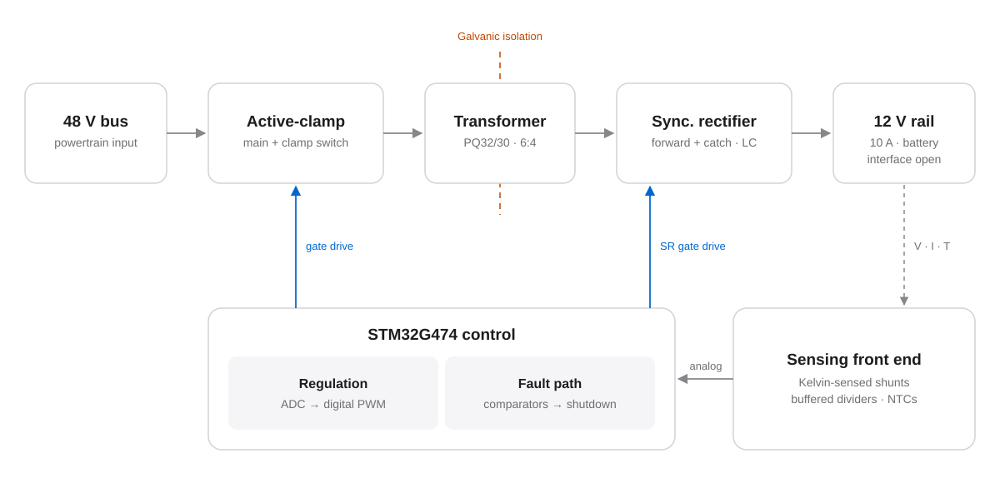
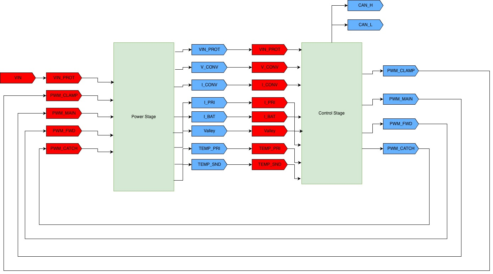
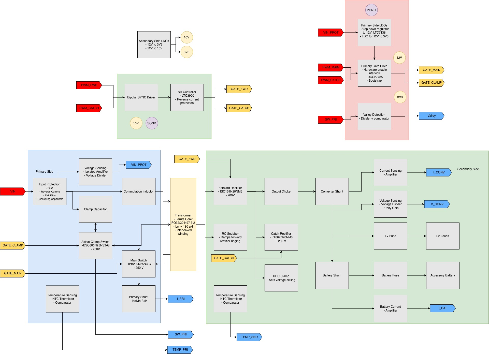
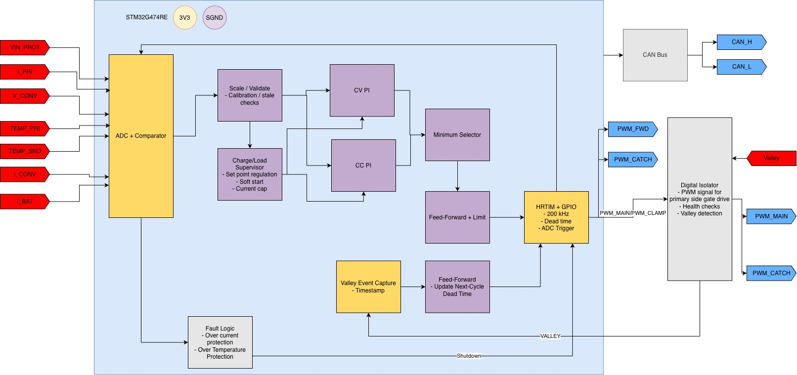
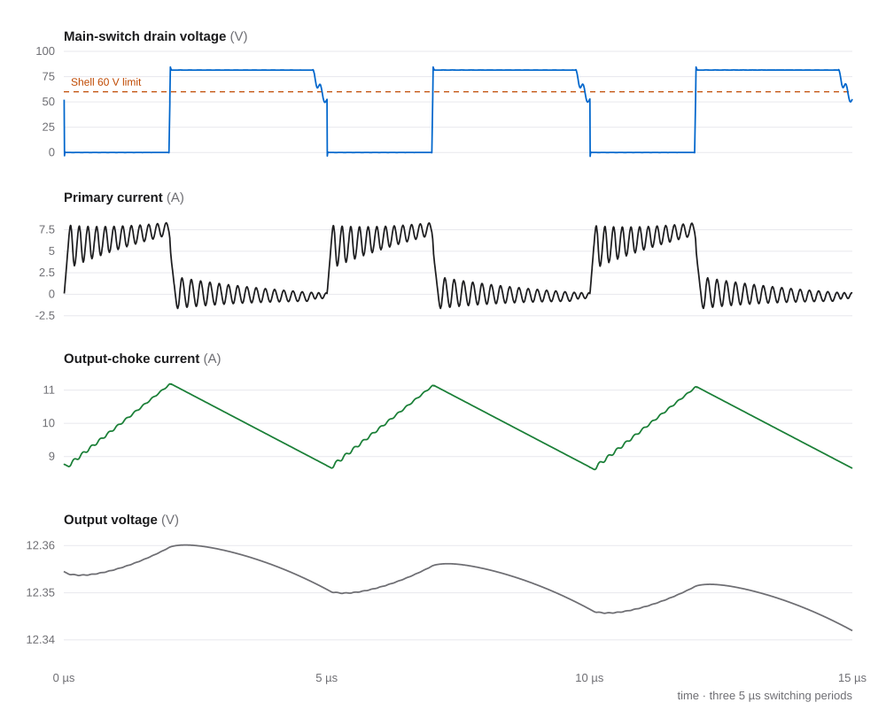
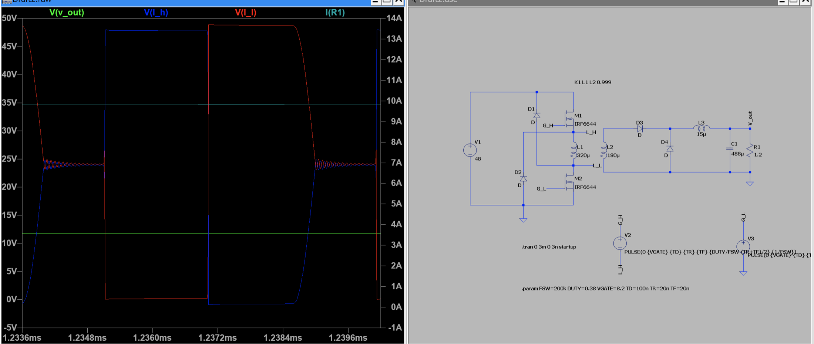

In progress · Jun 2026 – present
48 V to 12 V isolated forward converter
A 120 W isolated DC-DC converter I’m designing for Bruin Racing’s hydrogen fuel-cell Supermileage car.
This is my current project. Everything here is still in simulation, and the hardware build hasn’t started yet. Right now I’m comparing the active-clamp design with a two-switch forward version that keeps the switch voltage under the 60 V limit in the Shell Eco-marathon rules.

Background
The car runs on a 48 V bus, and its low-voltage electronics need a separate, isolated 12 V supply. The same converter will also charge the 12 V battery. My target is 12 V at 10 A (120 W), switching at 200 kHz.
The design has to meet the Shell Eco-marathon’s 60 V maximum-voltage rule, and that rule ended up shaping a lot of my decisions.
What I did
- Designed the active-clamp power stage and simulated it in LTspice using Infineon’s OptiMOS6 150 V MOSFET models.
- Modeled the PQ32/30 N97 transformer (6:4 turns, 180 µH magnetizing inductance) and swept leakage inductance and dead time (45–420 ns) to see how they affect switching and MOSFET voltage stress.
- Designed the protection sensing circuits for an STM32G474: Kelvin-sensed current shunts, buffered voltage dividers, and NTC thermistors, read by the chip’s ADC and comparators.
- Started simulating a two-switch forward converter as an alternative that stays under 60 V.
Block diagrams
I made these block diagrams for an earlier design review. I’ve since changed components and I’m working on a new version, so some parts and values in them are out of date.



Design decisions
Trying a two-switch forward for the 60 V rule
In my active-clamp simulations, the main switch goes above 80 V while the transformer resets, which is over the 60 V limit. In a two-switch forward, diodes clamp both switch nodes to the 48 V input, so I’m testing it as the alternative.
Turning off the catch rectifier at light load
At light load the output inductor runs in discontinuous mode. Keeping the catch MOSFET switched on in that mode made its voltage spikes worse, so I turn its gate drive off in DCM. At 1.5 A, that brought the simulated peak down from 74.4 V to 52.8 V.
Fault shutdown in hardware
Regulation runs in firmware on the STM32G474, but fault shutdown goes through the chip’s built-in comparators. That way the converter can shut off without waiting on the control loop.
Planning for transformer tolerance
The core’s inductance can vary anywhere from 144 to 234 µH. I kept leakage inductance as a variable in the model so I can retune the dead times once a real transformer is wound and measured.
Transformer
- Core
- TDK PQ32/30, N97 ferrite, ungapped
- Turns
- 6 : 4
- AL
- 5000 nH/turn² (+30 / −20%)
- Magnetizing L
- 180 µH nominal (144–234 µH range)
- Leakage
- 0.65 µH, an estimate until the transformer is built and measured
- Dead time
- 45–420 ns, depending on operating mode
Full-load waveforms

Two-switch forward converter
In a two-switch forward, the transformer sits between a high-side and a low-side MOSFET. When both turn off, two diodes send the transformer’s stored energy back to the input. That holds the switch voltage at about 48 V instead of letting it rise above it.
The downside is that the duty cycle has to stay under 50% so the transformer can reset each cycle. I’m still running simulations before deciding which topology to build.

Status
Done in simulation
- Active-clamp design with under 0.8% output ripple from 0.25 to 10 A
- Lower catch-MOSFET stress at light load
- Protection sensing circuits
Working on now
- Two-switch forward simulations
- A new design with updated components
- Battery charging voltage and connection
Next
- Pick a topology and lay out the PCB
- Wind the transformer and measure its leakage
- Bring up protection, then test at low voltage before full power